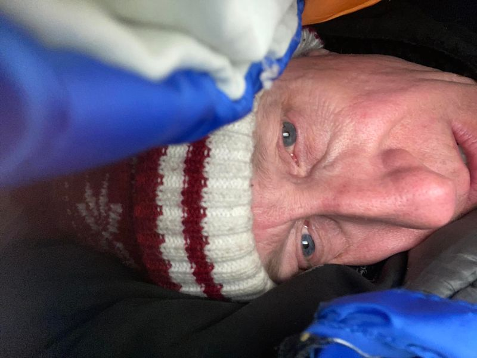

Mobile uploads
This is a picture of me last Christmas Eve in my tent in Highland Square at 9:28 pm.
Sleeping out in a tent to bring awareness to homeless pregnant women, like Jesus’ mom was, is a very emotional experience for me.
One feeling is that I’m just pretending to be homeless. It feels performative.
But what I can tell you is that doing this is low level terrifying. Tent camping in the winter is the very least of my worries. It’s not something I’d probably choose to do. But it’s manageable.
What isn’t manageable is everything else. Everything is a threat. Police, drunk people coming out of the bars, homeless people that will steal from other vulnerable people and, of course, raccoons.
Broadcasting my location (the corner of West Market and Portage in Highland Square) makes it so much worse. I’d so much rather be hiding somewhere in the woods.
The feelings of past camp outs spike in my mind. Strange sounds, darkness and vulnerability culminate in these sharp emotional stabs in my mind that come out of nowhere. It feels like low level post trauma.
All I can say is that I don’t like this feeling. I showed my wife how to log into my life insurance policy this morning.
But all these feeling make this all the more important. It’s easy to think about all the people in Akron, Anchorage, Chicago, New York, Detroit… all these Northern American cities, who don’t have a choice but to sleep outside this Christmas Eve, last Christmas Eve and all the nights in between.
I’ll go home tomorrow night and they’ll still be out there. That’s the difference.
It’s the very least I can do considering how little all of America is doing for these people.
Just the same, a woman stopped me in ACME this morning and asked if she could come by and drop off items. I would LOVE that. The love and kindness of average, everyday people is the most beautiful experience of this entire journey.
I’ll be out there about 6pm tonight. I’d love for you to stop by.
If you want to bring something, I have a list of items here:
https://donorbox.org/help-your-homeless-neighbor